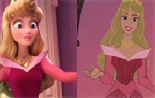
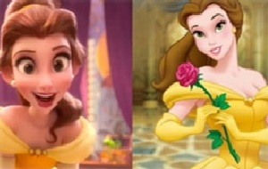
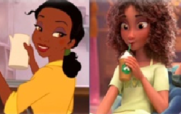

I film d’animazione esistono sin dagli inizi del secolo scorso e sono notoriamente produzioni in cui si illude il movimento di oggetti disegnati o fotografati. Soprattutto agli inizi la creazione di opere fotogramma per fotogramma era complessa e molto costosa, ma l’apprezzamento del pubblico era altissimo.
Walt Disney inizia la sua carriera come animatore creando una serie di corti animati di enorme successo con come protagonisti Topolino e Paperino, ma i fatti dimostrano che il vero primo lungometraggio sia stato Biancaneve e i sette nani.
Inizialmente ritenuto un grosso rischio per via di alti costi e lungo tempo di produzione, ha invece avuto un successo planetario.
Ma senza l’uso della tecnologia come si realizzano i cartoni?
Quasi tutti i personaggi del film sono stilizzati e animati con la tecnica del rotoscopio, che consiste nel ricalcare fotogramma per fotogramma una pellicola in cui erano stati filmati attori in carne ed ossa.

L’uso del computer per generare immagini animate risale alla fine degli anni ’60, ma solo nel 1995 esce il primo lungometraggio animato sviluppato interamente con la computer grafica: “Toy Story”. La produzione è della Pixar, la casa con come società madre proprio Walt Disney. Nel cartone i giocattoli diventano animati quando vengono lasciati soli e i protagonisti, Woody e Buzz, competono per avere l’attenzione del loro proprietario. Oltre a ispirare tre seguiti, il successo ha favorito l’enorme diffusione dei film animati in computer grafica.
L’animazione computerizzata è straordinaria e la direzione artistica è paragonabile a quella di un film in live-action, grazie al budget di circa 30 milioni di dollari e al team di più di cento dipendenti. L’universo di Toy Story è stato creato da zero e realizzato con un realismo senza precedenti. In media, sono state impiegate tre ore per completare ciascuna delle quasi duemila riprese. Grazie all’accuratezza della tecnica CGI (computer generated imagery) e alla qualità dei lungometraggi animati, tali film hanno acquisito grande importanza commerciale e artistica, portando all’istituzione nel 2001 dell’Oscar al miglior film d’animazione.
Ralph Spacca Internet
Ralph lascia la sala giochi di Litwak per avventurarsi nel grande, inesplorato ed elettrizzante mondo di Internet, che potrebbe anche non resistere al suo tocco non proprio leggero. Insieme alla sua compagna di avventure Vanellope von Schweetz, Ralph dovrà rischiare tutto viaggiando per il World Wide Web alla ricerca di un pezzo di ricambio necessario a salvare "Sugar Rush", il videogioco di Vanellope. Finiti in una situazione fuori dalla loro portata, Ralph e Vanellope dovranno fare affidamento sui cittadini di Internet per trovare la giusta direzione.

Questo film del 2018 ha come scopo di insegnamento che quando un minore entra nel mondo web, gli adulti hanno il dovere di fornirgli un sistema di regole tali da permettergli di vivere il meglio di quel mondo, senza correre i rischi ad esso correlati.
Perchè è importante questo film per la grafica Disney?
Il salto dall’animazione in 2D a quella in 3D ha portato parecchi risultati positivi nel mondo del cinema. La Disney, però, manteneva le sue principesse più famose con un’immagine in 2D, perciò, con l’uscita del film “Ralph Spacca Internet” (il seguito di Ralph Spacca Tutto), Disney ha visto l’opportunità di rappresentare le sue bellissime principesse con una grafica 3D da urlo in una scenetta simpatica e divertente. Questo film riesce anche ad includere personaggi appena acquistati come i due famosi robot di Star Wars: C3PO e R2-D2.

Nelle seguenti immagini si possono osservare gli evidenti miglioramenti di grafica dai primi film fino alla loro presenza in "Ralph spacca Internet" delle principesse Disney.
In ordine troviamo:
- Ariel-La Sirenetta
- Aurora-La Bella Addormentata
- Belle-La Bella E La Bestia
- Tiana-La Principessa E Il Ranocchio
- Biancaneve-Biancaneve
- Cenerentola-Cenerentola
1
2
3
4
5

6